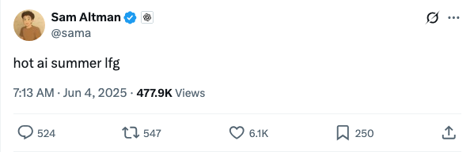

sama_预告AI领域将迎来“火热夏季”
Published: 2025-06-03T23:13:23.000Z OpenAI首席执行官Sam Altman在社交媒体上发布“hot ai summer lfg”推文，预示着人工智能领域即将迎来一个充满活力和突破的夏季。此言论暗示AI技术发展将加速，可能涉及新产品发布、重大技术进展或行业热点事件，引发业界对未来几个月AI领域动态的广泛关注和期待。
2025-06-02
About us: https://opusair.github.io/
OpenAI首席执行官Sam Altman在社交媒体上发布“hot ai summer lfg”推文，预示着人工智能领域即将迎来一个充满活力和突破的夏季。此言论暗示AI技术发展将加速，可能涉及新产品发布、重大技术进展或行业热点事件，引发业界对未来几个月AI领域动态的广泛关注和期待。
OpenAI首席执行官萨姆·奥特曼（Sam Altman）近日发布一条简短推文，表达了对即将到来的“AI热潮夏季”的强烈期待。这条推文虽然言简意赅，但其“lfg”（let's fucking go）的表达方式，暗示着AI领域在未来几个月内可能迎来一系列激动人心的进展或重大突破。作为行业领袖，奥特曼的此番表态，预示着AI技术发展和应用将进入一个更加活跃和快速迭代的时期，引发了业界对潜在新产品、新研究成果或重要合作的广泛关注和猜测。
OpenAI首席执行官Sam Altman近日宣布，ChatGPT的免费用户现已可使用轻量级记忆功能。Altman表示，记忆功能已成为他个人最喜爱的ChatGPT特性，并对该功能未来的持续改进充满期待。此举旨在提升免费用户体验，使AI助手能更好地记住过去对话内容，提供更连贯的交互。
Sam Altman宣布，AI模型Codex今日起获得互联网访问能力。该功能默认关闭，用户需谨慎权衡其复杂风险与潜在益处。同时，Codex的互联网访问功能已向ChatGPT Plus订阅用户开放。此举旨在提升Codex的信息获取能力，但用户在使用时需充分了解并评估相关风险。
OpenAI宣布其AI编程工具Codex今日起向ChatGPT Plus用户全面开放。此次推出初期将提供慷慨的使用额度，但为确保服务广泛可用性，在需求高峰期可能会对Plus用户设置速率限制。此举旨在提升ChatGPT Plus用户在代码生成和开发方面的体验。
OpenAI宣布，其ChatGPT的记忆功能正逐步向免费用户开放。此项更新旨在通过引用用户近期对话内容，进一步提升ChatGPT的个性化响应能力。结合此前已保存的记忆，新功能将使模型能够根据用户的偏好和兴趣，提供更贴合需求的回应，从而在写作、获取建议和学习等多个应用场景中提供更高效、个性化的交互体验。此举标志着OpenAI在提升用户体验方面的持续努力。
互联网女王MaryMeeker发布了长达340页的《AI趋势报告2025》，指出AI驱动的变革已全面且不可逆转，预示着一个机遇遍地的黄金时代。报告强调，尽管顶级模型训练成本高昂，但推理成本正以前所未有的速度下降，重塑了行业格局，并预示着轻量级定制化模型的崛起。报告揭示印度成为ChatGPT第二大市场，以及中国AI模型正以极低成本迅速追赶美国顶尖水平，甚至在某些方面超越。Meeker犀利指出OpenAI等头部AI公司估值过高，泡沫化风险显现。文章还深入探讨了AI已成为中美两国综合实力的“太空竞赛”，并预测下一个十亿用户将直接进入以智能体为中心的AI原生生态系统，颠覆传统互联网模式。报告认为，AI正开启一个全新的技术超级周期，现有赢家并非永远的赢家。
微软等机构研究者提出“表征链”（CoR）概念，并在此基础上创新性地提出了“模型链”（CoM）学习范式，旨在解决现有大语言模型（LLM）扩展策略中知识无法保留、训练成本高昂及动态适应性不足等问题。CoM通过引入因果依赖关系，确保模型能渐进式利用前序信息，并将其应用于Transformer架构，构建了“语言模型链”（CoLM）及其优化版本CoLM-Air。实验结果表明，CoLM系列模型在性能上与现有Transformer相当，但在可扩展性、灵活性、预填充速度及微调成本方面展现出显著优势，例如通过“链式调优”可大幅降低训练成本并缓解灾难性遗忘，为LLM的未来发展提供了新思路。
西北大学与谷歌/DeepMind团队提出贝叶斯自适应强化学习（BARL）新框架，首次解释并实现了大语言模型（LLM）在推理过程中如何有效反思与探索。该框架通过建模环境不确定性，使LLM在测试阶段也能自适应地进行信息增益式探索，克服了传统强化学习中模型仅依赖训练记忆的局限。BARL平衡了奖励最大化与信息获取，在数学推理任务中显著提升了准确率，并降低了所需token数量，证明了有目的的反思而非盲目试错能带来实质性性能提升。此研究为LLM的推理能力和智能体行为提供了新的优化路径。
浙江大学、电子科技大学和香港中文大学团队发布ViewSpatial-Bench，这是首个系统评估视觉语言大模型（VLM）多视角多任务空间定位能力的基准体系，包含5700余个问答对。研究发现，当前VLM在空间推理方面表现不足，缺乏统一的三维空间认知框架。为此，团队提出Multi-View Spatial Model（MVSM），通过针对性训练，在ViewSpatial-Bench上实现46.24%的性能提升。该工作为AI系统获得类人空间认知能力提供了可行路径，对下一代机器人与多模态助手至关重要。
Paper2Poster是一款创新的多代理工具，能高效地将PDF学术论文自动化转换为专业学术海报。该系统通过解析器提取论文内容、规划器进行文本-视觉对齐，以及Painter-Commenter循环优化面板，实现了从22页PDF到可编辑PPTX海报的转化。其基于Qwen-2.5系列变体的开源版本，在性能上超越现有系统，同时将Tokens使用量减少87%，单次转换成本仅为0.005美元。这一突破性进展不仅大幅提升了科研效率，也为未来全自动化海报生成模型的发展指明了方向，并在开源社区获得了广泛关注。
新智元媒体报道，其在成立十周年之际，隆重宣布“ASI降临”这一里程碑事件，并向业界发出诚挚邀请。此举不仅标志着新智元在人工智能领域深耕十载所取得的显著成就，更预示着通用人工智能乃至超级人工智能时代即将到来。新智元或将借此机会，汇聚全球顶尖智慧，共同探讨AI技术发展的前沿趋势、伦理挑战及未来应用前景，旨在推动人工智能技术向更高层次迈进，共同迎接并塑造ASI时代的到来。本次活动预计将吸引众多AI专家、学者及行业领袖参与，共同见证并开启人工智能发展的新篇章。

Onlook是一款开源、视觉优先的代码编辑器，专为设计师打造。它利用AI技术，支持在Next.js和TailwindCSS项目中快速创建和可视化编辑网站与原型，实现代码与设计的实时同步。该工具提供直接DOM编辑、AI聊天辅助、实时代码预览等功能，旨在成为Bolt.new、Figma Make等工具的开源替代品，加速前端开发与设计流程。
NautilusTrader是一个开源、高性能、生产级的算法交易平台，专为量化交易者设计。其核心采用Rust和Cython实现，提供事件驱动的交易引擎，确保速度与安全性，并支持Python原生环境。平台具备强大的回测能力和无缝的实盘部署，支持多市场连接、高级订单类型及AI交易策略训练，适用于高频交易、套利等多种场景。

Agent Zero是一个动态、可定制的个人智能体框架，能随用户使用而学习成长。它将计算机作为工具，通过多智能体协作完成通用任务，并支持代码执行、自定义工具和实时交互。该框架高度透明且完全可配置，适用于开发、数据分析、内容创作等多种场景。
Postiz是一款AI驱动的社交媒体日程安排工具，旨在帮助用户管理社交媒体内容、构建受众、获取潜在客户并促进业务增长。它提供AI功能、数据分析和团队协作，支持多平台发布，是社交媒体运营的综合解决方案。

FLUX是由Black Forest Labs开发的图像生成与编辑模型推理代码库。该项目提供了Flux模型的最小推理代码，支持本地安装（包括TensorRT优化），并提供API接口，涵盖文本到图像、图像修复、结构化条件生成及图像变体等多种功能。它旨在为用户提供灵活的图像AI应用开发能力。

Reddit Video Maker Bot是一个Python驱动的自动化工具，旨在将Reddit内容转换为适用于TikTok、YouTube和Instagram的视频。它通过编程实现视频生成，无需手动编辑，支持自定义背景音乐、Reddit帖子、背景、语音和NSFW过滤。该工具简化了内容创作流程，特别适合希望自动化Reddit视频制作的创作者。

近期以推理为中心的语言模型取得了进展，强化学习（RL）被认为是使模型与可验证奖励对齐的有前景方法。然而，RL是否真正拓展了模型的推理能力，或者仅仅是放大了基础模型分布中已有的高奖励输出，以及持续增加RL计算是否能可靠地提升推理性能，这些问题仍存在争议。在这项工作中，我们通过证明延长强化学习（ProRL）训练能够发现基础模型即使在大量采样下也无法获得全新推理策略，从而挑战了普遍的假设。我们引入了ProRL，这是一种新颖的训练方法，它结合了KL散度控制、参考策略重置和多样化的任务集。我们的实证分析表明，经过RL训练的模型在广泛的pass@k评估中始终优于基础模型，包括基础模型无论尝试次数多少都完全失败的场景。我们进一步表明，推理边界的改进与基础模型的任务能力和训练时长密切相关，这表明RL可以随着时间的推移探索并填充解决方案空间的新区域。这些发现为RL在语言模型中有效拓展推理边界的条件提供了新见解，并为未来关于推理的长期RL工作奠定了基础。我们发布了模型权重以支持进一步研究：https://huggingface.co/nvidia/Nemotron-Research-Reasoning-Qwen-1.5B

自动化人工智能研究在加速科学进步方面具有巨大潜力，然而，当前的人工智能智能体在严谨的端到端实验复杂性方面仍面临挑战。我们引入了 EXP-Bench，这是一个新颖的基准测试，旨在系统地评估人工智能智能体在源自影响力的人工智能出版物的完整研究实验中的表现。给定一个研究问题和不完整的初始代码，EXP-Bench 挑战人工智能智能体制定假设、设计和实施实验程序、执行实验并分析结果。为了能够高保真地创建如此复杂和真实的任务，我们设计了一个半自动化管道，从这些研究论文及其相关的开源代码中提取和构建关键的实验细节。通过该管道，EXP-Bench 从 51 篇顶级人工智能研究论文中整理了 461 项人工智能研究任务。对领先的基于大型语言模型的智能体（如 OpenHands 和 IterativeAgent）在 EXP-Bench 上的评估表明其能力有限：尽管在设计或实现正确性等单个实验方面的得分偶尔能达到 20-35%，但完整可执行实验的成功率仅为 0.5%。通过识别这些瓶颈并提供真实的逐步实验程序，EXP-Bench 将成为未来人工智能智能体提高其进行人工智能研究实验能力的关键工具。EXP-Bench 已在 https://github.com/Just-Curieous/Curie/tree/main/benchmark/exp_bench 开源。

验证码（CAPTCHA）一直是将网络智能体部署到实际应用中的关键瓶颈，常常阻碍它们完成端到端自动化任务。尽管现代多模态大型语言模型（LLM）智能体在静态感知任务中表现出令人印象深刻的性能，但它们处理像验证码这样交互式、多步骤推理挑战的能力在很大程度上尚未经过测试。为了弥补这一空白，我们推出了Open CaptchaWorld，这是首个专门设计用于通过多样化和动态的验证码谜题来评估多模态LLM驱动智能体的视觉推理和交互能力的网络基准和平台。我们的基准涵盖了20种现代验证码类型，共计225个验证码，并标注了我们提出的一种新指标：验证码推理深度（CAPTCHA Reasoning Depth），该指标量化了解决每个谜题所需的认知和运动步骤数量。实验结果表明，人类始终能取得近乎完美的成绩，而最先进的多模态LLM智能体则表现出显著的困难，其中Browser-Use Openai-o3的成功率最高仅为40.0%，远低于人类水平的93.3%。这凸显了Open CaptchaWorld作为一个重要基准的作用，可用于诊断当前多模态智能体的局限性，并指导开发更强大的多模态推理系统。代码和数据可在此https URL获取。

可验证奖励强化学习（RLVR）最近已成为后训练大型语言模型（LLM）的强大范式，在具有结构化、可验证答案的任务上取得了最先进的性能。将RLVR应用于多模态大型语言模型（MLLM）带来了巨大的机遇，但由于视觉-语言任务的广泛异构性，这些任务需要细致的视觉、逻辑和空间能力，使得应用变得复杂。因此，使用RLVR在多个数据集上训练MLLM可能是有益的，但不同数据集之间的交互会产生冲突的目标，从而带来挑战，这凸显了优化数据混合策略以提高泛化和推理能力的需求。我们引入了一个系统的多模态LLM RLVR后训练框架，其特点是严格的数据混合问题表述和基线实现。(1) 我们开发了一个用于多数据集后训练的多模态RLVR框架，通过整理包含不同可验证视觉-语言问题的数据集，并支持具有不同可验证奖励的多领域在线RL学习；(2) 我们提出了一种数据混合策略，该策略学习从数据混合分布中预测RL微调结果，从而优化最佳混合。全面的实验表明，多领域RLVR训练与混合预测策略相结合，可以显著提升MLLM的通用推理能力。与使用均匀数据混合进行后训练的相同模型相比，我们最佳的混合策略使后训练模型在分布外基准上的准确率平均提高了5.24%；与预微调基线相比，总共提高了20.74%。

人工智能智能体在面向消费者的应用中日益普及，以协助完成产品搜索、谈判和交易执行等任务。本文探讨了一种未来场景，即消费者和商家都授权人工智能智能体完全自动化谈判和交易。我们旨在回答两个关键问题：（1）不同的LLM智能体在为用户争取有利交易方面的能力是否存在差异？（2）在消费者市场中，通过人工智能智能体完全自动化交易会带来哪些风险？为了解决这些问题，我们开发了一个实验框架，用于评估各种LLM智能体在真实谈判和交易环境中的表现。我们的研究结果表明，由AI介导的交易本质上是一种不平衡的博弈——不同的智能体为其用户带来了显著不同的结果。此外，LLM中的行为异常可能导致消费者和商家遭受经济损失，例如过度消费或接受不合理的交易。这些结果强调，尽管自动化可以提高效率，但它也带来了巨大的风险。用户在将商业决策委托给AI智能体时应谨慎行事。

角色扮演语言智能体（RPLAs）旨在模拟角色，以实现真实且引人入胜的人机交互。然而，传统的奖励模型在可扩展性和适应主观对话偏好方面常常面临挑战。我们提出了ChARM，一个基于角色的行为自适应奖励模型，通过两项创新解决了这些挑战：（1）一个行为自适应裕度，显著提高了学习效率和泛化能力；（2）一个利用大规模未标注数据以提高训练覆盖率的自演化机制。此外，我们引入了RoleplayPref，这是首个专门针对RPLAs的大规模偏好数据集，包含1,108个角色、13个子类别和16,888个双语对话，以及一个专门的评估基准RoleplayEval。实验结果表明，在偏好排名方面，ChARM比传统的Bradley-Terry模型提高了13%。此外，将ChARM生成的奖励应用于偏好学习技术（例如直接偏好优化）在CharacterEval和RoleplayEval上取得了最先进的结果。代码和数据集可在https://github.com/calubkk/ChARM获取。